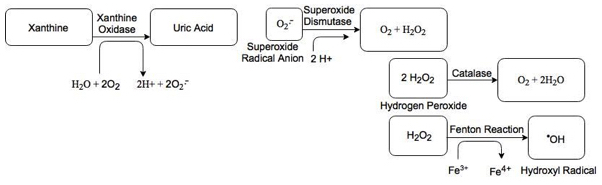
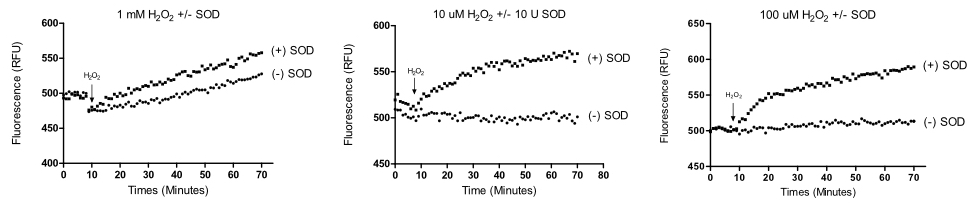

Effects of Oxidants on Superoxide Dismutase
Writer: Jennifer Tao
Date: Fall 2017
Citation: Tao, J. & Laskin, J. (2017). Effects of Oxidants on Superoxide Dismutase. Rutgers Research Review, 2(2).
My name is Jennifer Tao, and I am a senior at Rutgers University in the School of Arts and Sciences. I am majoring in biomathematics, an interdisciplinary combination of mathematics and the biological sciences. Currently, I work under the direction of Dr. Jeffrey Laskin at the Environmental and Occupational Health and Science Institute (EOHSI). Our work involves exploring and understanding systems that generate reactive oxygen species (ROS). We will be presenting our research this March at the annual Society of Toxicology Meeting in San Antonio, Texas. Following graduation, I plan to apply to graduate schools and hope to continue research in the biological sciences.

Figure 1: Systems that generate ROS, such as superoxide (O2-), and the role of superoxide dismutase (SOD) in catalyzing dismutation of superoxide.
The field of redox biology investigates mechanisms in which molecules known as reactive oxygen species (ROS) react to cause oxidative stress, or damage within a biological system. The production of ROS is an inevitable by-product of many biological processes. The most common example is the mitochondrial electron transport chain during the process of the reduction of oxygen to water. When electrons from reduced substrates leak out of the respiratory chain, they can react inappropriately with oxygen to form superoxide (O2-) (Brand, 2004). ROS can also be generated in other natural biological processes such as cellular responses to cytokines, bacterial invasion, or xenobiotics (Ray, 2012). ROS species, such as superoxide, are unusually chemically reactive due to a single unpaired electron in the outer electron orbital. Other examples of ROS are hydrogen peroxide (H2O2) and the hydroxyl radical (OH●). Superoxide and the reactive oxygen species derived from it (HOO●, H2O2, OH•) are believed to be responsible for a host of pathological processes such as inflammation, atherosclerosis, and aging. Oxidative stress results from an imbalance between the formation of ROS by a system and the system’s ability to detoxify the reactive intermediates.
Superoxide is a molecule of interest, because it is a precursor ROS molecule that often leads to the formation of more reactive and more dangerous ROS species. Superoxide is usually accompanied by the formation of hydrogen peroxide (H2O2), which can form the hydroxyl radical (OH●). The hydroxyl radical is infamous among biochemists in the field of ROS because it is a notoriously reactive ROS that is capable of oxidizing proteins and DNA, resulting in DNA mutations and protein malfunction. Unlike the superoxide anion, which can be scavenged by superoxide dismutase (SOD), there is no enzyme that converts the hydroxyl radical to less harmful species, leaving OH● within the system as a highly toxic ROS.
The enzyme superoxide dismutase plays a critical role in defense against oxidative stress by scavenging superoxide to form hydrogen peroxide and oxygen. In some dominant familial amyotrophic lateral sclerosis (FALS) pedigrees, mutations have been linked to a genetic defect that encodes for Cu, Zn-binding superoxide dismutase (SOD1) (Rosen, 1993). It has been suggested that superoxide dismutase is implicated in FALS due to its suspected role in free radical toxicity. Prior reports indicate that wild type Human Cu, Zn-SOD is capable of using H2O2 as a substrate to generate free hydroxyl radicals (OH●) (Stadtman & Chock, 1990). The FALS mutant SOD has a lower Km for H2O2, suggesting that the mutant SOD has a higher affinity for using H2O2 as a substrate than non-mutant SOD, which also results in greater generation of hydroxyl radical, or oxidative stress within an organism. Past studies used spin-trapping methods and electron paramagnetic resonance (EPR) spectroscopy to detect OH●. These studies required concentrations of H2O2 of 5 mM to 30 mM, extremely high H2O2 concentrations unlikely to be found within the human body.
In the present studies, we treated SOD with concentrations of H2O2 closer to physiological levels and detected the formation of OH● using a novel marker disodium terephthalate (TPT) to see if the reaction between SOD and H2O2 occurs. We hypothesize that in the absence of superoxide, SOD will use H2O2 as a substrate to catalyze the formation of hydroxyl radicals (OH●). Based on our findings, superoxide dismutase, thought to be an altruistic enzyme that is capable of reducing oxidative stress, may actually be involved in promoting oxidative damage through hydroxyl radical formation. This has significant implications for the role of superoxide dismutase as a ROS scavenger, and raises the question of whether SOD is capable of promoting damage in a biological system rather than reducing damage caused by superoxide.
In order to assess hydroxyl radical activity by SOD, H2O2 was added as a substrate in concentrations of 10 µM, 100 µM and 1 mM to samples in the presence and absence of SOD using a plate reader. Reaction mixtures contained potassium phosphate buffer (pH 7.83), DTPA, terephthalate, and human superoxide dismutase in a final volume of 200 uL. Reactions were initiated by the addition of H2O2.
For our hydroxyl radical assays, disodium terephthalate (TPT) was used as a marker to assess SOD activity through the formation of 2-hydroxyterephatlate (2-OHTA). TPT reacts with OH• to form 2-OHTA in a 1:1 ratio which can be detected using a plate reader through fluorescent settings. We used excitation and emission wavelengths (310 nm, 425 nm) for 2-OHTA, with low PMT gain and bottom read. We detected the formation of hydroxyl radical through the fluorescence of 2-OHTA. Our enzyme assays were performed in Greiner 96-well black polystyrene flat clear-bottom microwell plates. Data was collected using SoftMax Pro 7.0 software and analyzed using GraphPad Prism 5.

Figure 2: (A) Time-dependent formation of 2-OHTA from TPT by human SOD (10 U, Sigma) incubated with H2O2 (10 uM, 100 uM, 1 mM) for 1 hr 10 min. Results of one representative experiment are shown for each concentration of H2O2.
Our studies confirm that human SOD catalyzes the reaction of H2O2 to the hydroxyl radical (OH●) in the absence of superoxide (O2●-) at low concentrations of H2O2. Our data indicated time-dependent formation of 2-OHTA from TPT by human SOD when incubated with H2O2 (10 uM, 100 uM, 1 mM) for 1 hour 10 min. These findings are consistent with past reports that SOD is capable of producing the OH● through electromagnetic resonance (EPR) and spin trapping methods (Den Harton, 2003; Chock & Stadtman, 1996, Chock & Stadtman 1990).
Our studies also indicate that disodium terephthalate is a reliable and sensitive assay for the formation of hydroxyl radical at low concentrations. We used the xanthine/xanthine oxidase system to test the sensitivity of the TPT assay prior to our core experiments by generating the hydroxyl radical through the Fenton reaction. The Fenton reaction describes the formation of hydroxyl radicals through the reaction between hydrogen peroxide and various metals, such as iron and copper. We initiated the generation of H2O2 by the addition of xanthine oxidase to a solution containing xanthine. As expected, there was no production of 2-OHTA until Fe (II): EDTA was added. Once Fe (II): EDTA was added, it catalyzed the formation of the hydroxyl radical from H2O2, as expected from the fenton reaction.
It remains unclear through what precise mechanism SOD is able to catalyze the formation of OH●. Our hypothesis is that in the absence of superoxide, the copper active site of SOD reacts with H2O2 in a Fenton-like reaction to form of OH●. In future studies, we will investigate the effects of chemical compounds such as copper chelators that may interfere with the copper active center of Human SOD, thereby preventing the Fenton reaction (formation of OH●).
In the future, a field to further investigate would be how physiological conditions in vivo affect the reaction between SOD and hydrogen peroxide, and whether the generation of hydroxyl radicals by SOD still occurs. In conclusion, our current studies raise implications for the role of SOD, a critical ROS scavenger; whether SOD is involved in antioxidant defense or if it is implicated in potential ROS damage.
References
- Brand, M. D., Affourtit, C., Esteves, T. C., Green, K., Lambert, A. J., Miwa, S., Pakay, J. L., & Parker, N. (2004). Mitochondrial superoxide: production, biological effects, and activation of uncoupling proteins. Free Radical Biology and Medicine, 37, 755-767.
- den Hartog, G. J., Haenen, G. R., Vegt, E., van der Vijgh, W. J., & Bast, A. (2003). Superoxide dismutase: the balance between prevention and induction of oxidative damage. Chemico-biological interactions, 145, 33-39.
- Ray, P. D., Huang, B. W., & Tsuji, Y. (2012). Reactive oxygen species (ROS) homeostasis and redox regulation in cellular signaling. Cellular signalling, 24, 981-990.
- Rosen, D. R., et al. (1993). Mutations in Cu/Zn superoxide dismutase gene are associated with familial amyotrophic lateral sclerosis. Nature, 362, 59.
- Yim, M. B., Chock, P. B., & Stadtman, E. R. (1990). Copper, zinc superoxide dismutase catalyzes hydroxyl radical production from hydrogen peroxide. Proceedings of the National Academy of Sciences, 87, 5006-5010.
- Yim, M. B., Kang, J. H., Yim, H. S., Kwak, H. S., Chock, P. B., & Stadtman, E. R. (1996). A gain-of-function of an amyotrophic lateral sclerosis-associated Cu, Zn-superoxide dismutase mutant: an enhancement of free radical formation due to a decrease in Km for hydrogen peroxide. Proceedings of the National Academy of Sciences, 93, 5709-5714.